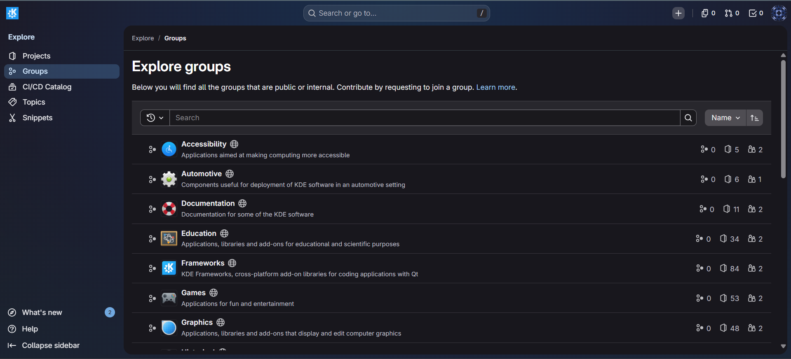
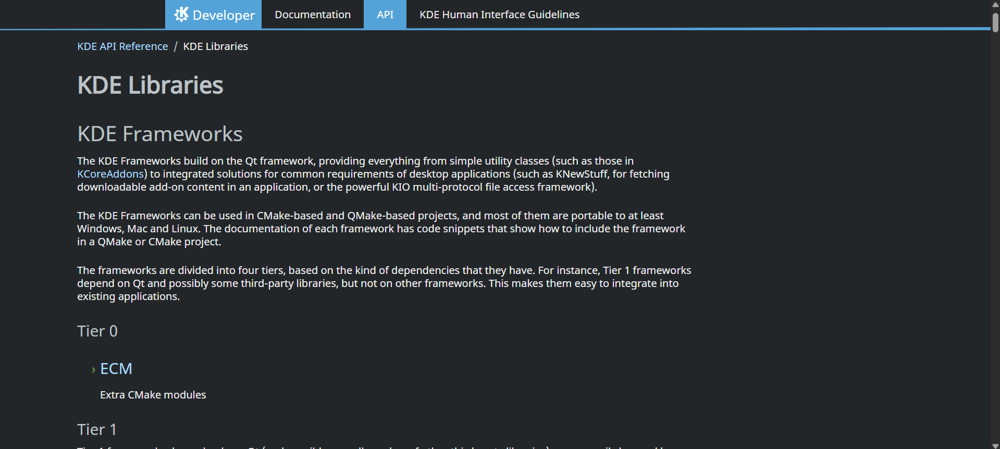
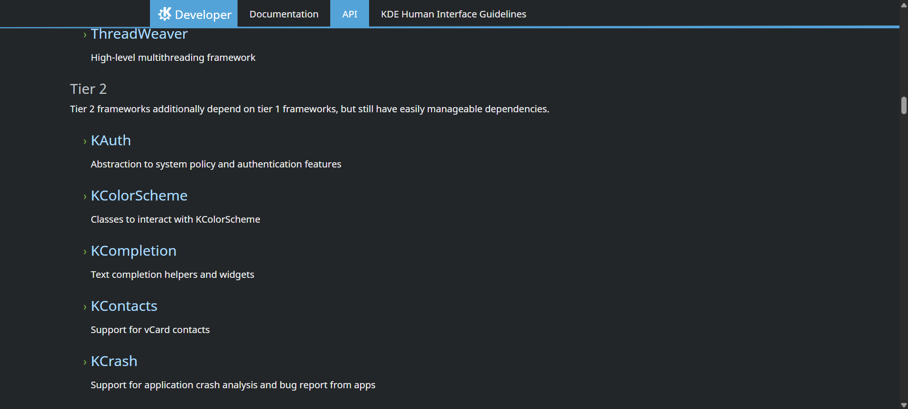
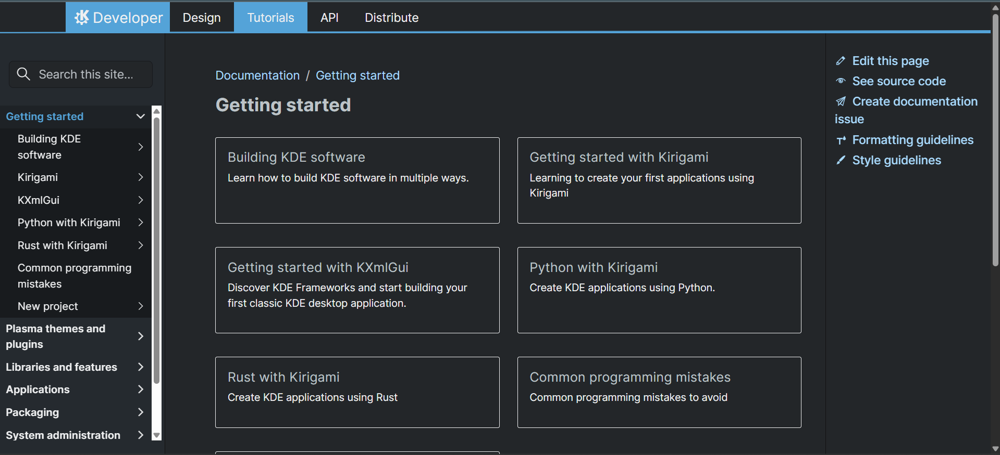
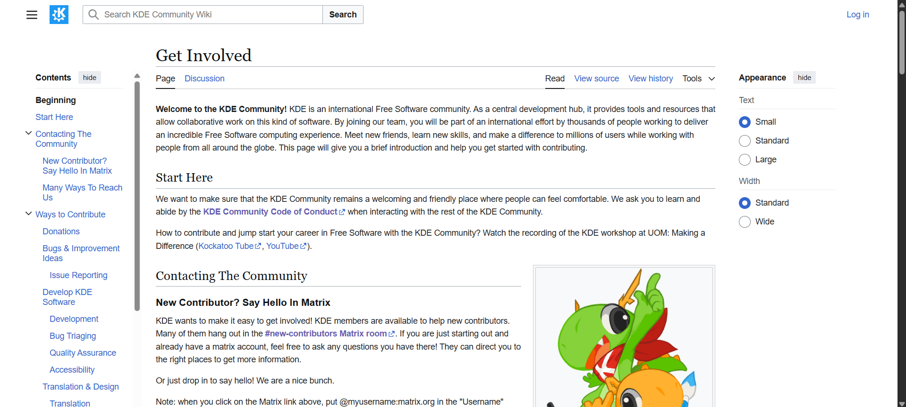
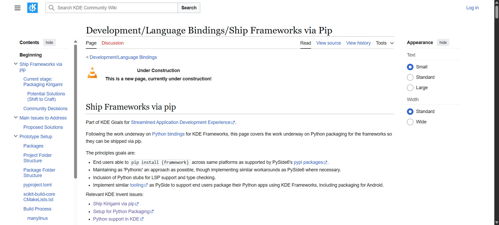
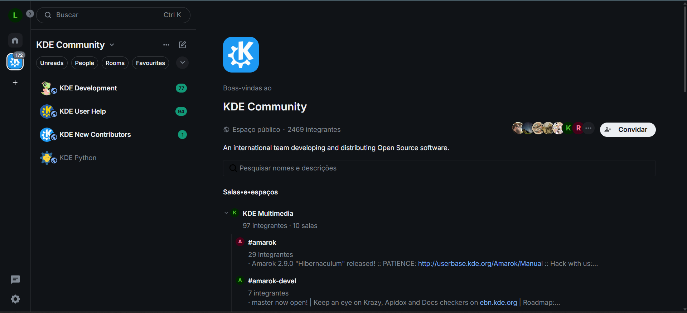

Diário de Bordo – [Lucas Martins Gabriel]
Disciplina: [Gestão da Configuração e Evolução de Software] Equipe: [KDE Frameworks] Comunidade/Projeto de Software Livre: [KDE]
Sprint 0 – [06/04/2026 – 22/04/2026]
Resumo da Sprint
Sprint dedicada ao onboarding completo no projeto KDE Frameworks. Realizei leitura detalhada do guia de contribuição e código de conduta da comunidade, criação de contas nas principais plataformas de colaboração (KDE Invent e Matrix), e exploração da arquitetura do KDE Frameworks. Estudei a organização de subprojetos divididos em 4 tiers de dependências e explorei projetos em desenvolvimento como o Language Bindings (Ship Frameworks via Pip).
Atividades Realizadas
| Data | Atividade | Tipo (Código/Doc/Discussão/Outro) | Link/Referência | Status |
|---|---|---|---|---|
| 06/04 | Leitura do guia de contribuição do KDE | Estudo | Get Involved | Concluído |
| 08/04 | Leitura e compreensão do código de conduta | Estudo | KDE Code of Conduct | Concluído |
| 10/04 | Criação de conta no KDE Invent | Configuração | invent.kde.org | Concluído |
| 12/04 | Criação de conta no Matrix | Configuração | matrix.org | Concluído |
| 15/04 | Exploração inicial da estrutura de subprojetos | Estudo | KDE Development Docs e KDE Frameworks | Concluído |
| 18/04 | Estudo do projeto Language Bindings | Estudo | Ship Frameworks via Pip | Concluído |
| 20/04 | Documentação do processo de onboarding | Documentação | Este diário | Concluído |
Maiores Avanços
- Criação bem-sucedida de contas nas plataformas essenciais do KDE (Invent e Matrix).
- Compreensão das políticas de contribuição e código de conduta da comunidade KDE.
- Familiarização com a organização geral do projeto KDE Frameworks.
- Documentação estruturada do processo de onboarding para futuras referências.
Maiores Dificuldades
- A estrutura de subprojetos do KDE Frameworks é complexa; foi desafiador compreender a organização.
- Dificuldade ao tentar acessar os canais do KDE no Matrix via homeserver matrix.org.
Aprendizados
- Políticas de contribuição do projeto KDE e boas práticas de colaboração em comunidades open source.
- Código de conduta e responsabilidades éticas como membro da comunidade.
- Processo de autenticação e criação de contas em plataformas KDE (Invent e Matrix).
- Visão geral da arquitetura modular do KDE Frameworks e seus subprojetos.
Evidências e Referências Visuais
Os seguintes prints documentam o processo de onboarding e exploração realizado:
KDE Invent - Grupos de Projetos
Estrutura de grupos disponíveis na plataforma (Accessibility, Automotive, Documentation, Education, Frameworks, Games, Graphics)

KDE Frameworks - Documentação de Tiers
Arquitetura modular do KDE Frameworks dividida em 4 tiers com suas respectivas dependências


KDE Developer Portal
Página inicial com guias de desenvolvimento (Getting Started, Building KDE, Kirigami, KXmlGui, Python, Rust)

KDE Community Wiki - Get Involved
Página de contribuição com informações sobre como contatar a comunidade e acessar Matrix

Ship Frameworks via Pip
Documentação do projeto "Ship Frameworks via Pip" para distribuição de frameworks via pip

Matrix - KDE Community
Estrutura de canais e salas da comunidade KDE no Matrix

Plano Pessoal para a Próxima Sprint
- [ ] Estudar em profundidade a organização de pelo menos 2-3 subprojetos específicos do KDE Frameworks (ex: QtColorWidget, KAuth, KColorScheme)
- [ ] Encontrar e analisar uma issue para iniciantes em um dos subprojetos do KDE Frameworks
- [ ] Preparar o ambiente local para contribuir (clonar repositório, instalar dependências, executar testes)
- [ ] Realizar o primeiro commit ou pull request pequeno para ganhar experiência com o fluxo de contribuição
- [ ] Colaborar com outros membros da equipe: participar de revisão de código, fazer perguntas nos canais do Matrix/Invent